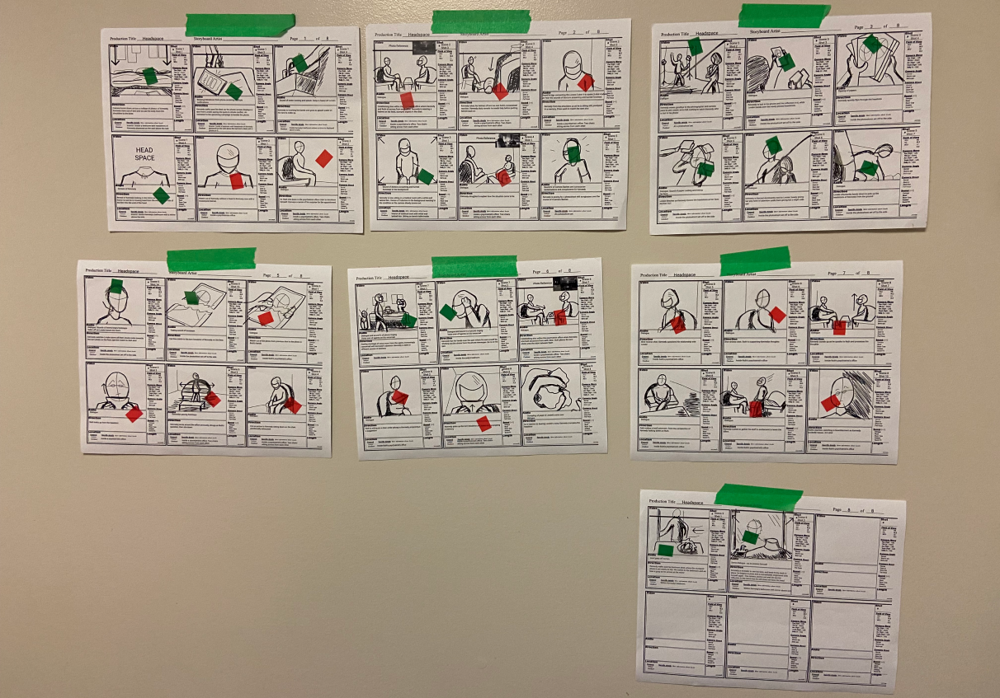
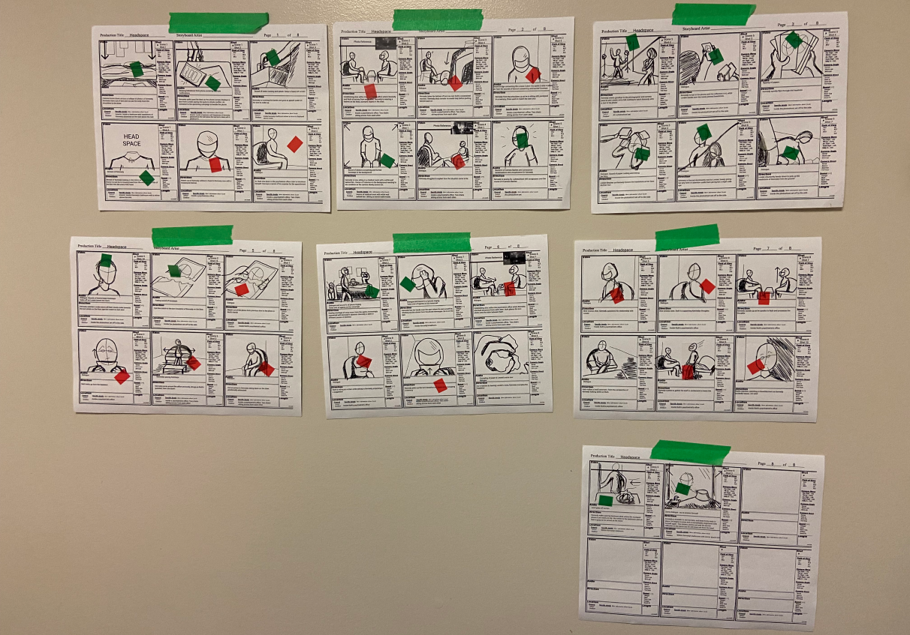
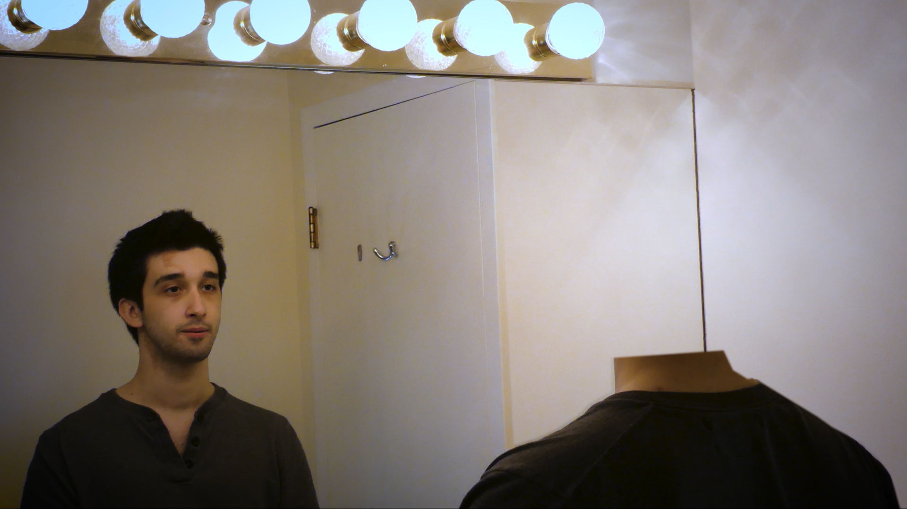
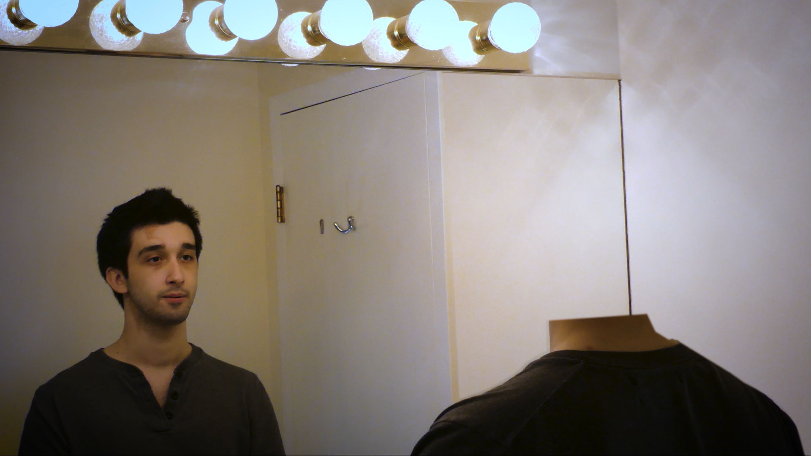

Project Two
Storyboarding, film, & production design
Overview
As part of learning about new media, my team was tasked to design, film, and manage all aspects of the film-making process and emerge with an approximately 5-minute short film. My roles were storyboarding, production design, organizing casting, as well as contributing to writing and producing.
-8 week project in Spring of 2022
-Tools:
-Team: Joshua Chin, Triane Tambay, Anika Richards, Alexis Lee
Ideation
Our films idea initially began as a mockumentary, a satirical version of a traditional documentary. While we settled on a more traditional type of story to consolidate what we had within the 5-minute constraints, remnants of the interview format still remain. We wanted to tell a twisted, thriller type of story and drafted a short mood board. As well, in pre-production, my main focus was on creating the storyboard that would guide us through filming.
 

Creation
The process of creating a film taught me the dedication needed for project management. As I was the main link of communication between the cast and crew, I realized how strongly team project successes are defined upon dedication, proactiveness, and of course communication. In our case, one “curveball” we faced during filming was a possible exposure during the covid-19 pandemic. Reorganizing, accommodating for everyone, and reflecting on the most important next steps were some of the solutions I was forced to implement.
It was also important listening to critiques of our work during development. The films end sequence was mentioned as being in need of more impact and self-realization. We restructured the ending story shift to heighten and better imply the protagonist’s motivations.


 

In Retrospect
Before this project, I contemplated and worried about how I could actually meaningfully contribute, considering that film was not something I had done before. However, I was able to identify my strengths and find openings to work with, as well as being able to widen my skillset and develop soft skills like leadership and adaptability in a project setting.
Return to Projects